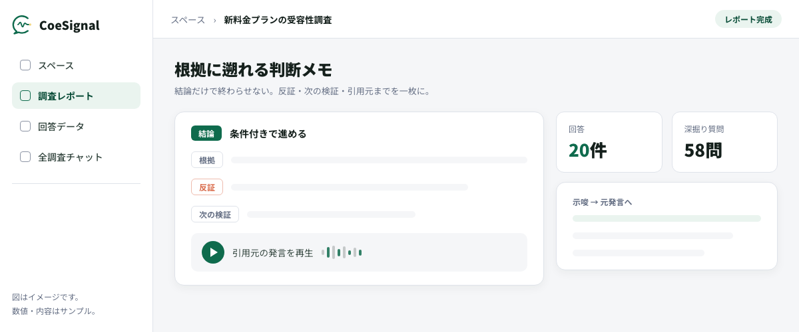

- インタビュー分析が重いのは、逐語録化・コーディング・切片化・統合という多段の手作業が積み重なるうえ、解釈が担当者に属人化しやすいから。件数が増えるほど「読み切れない」が常態化する。
- 生成AIが速くするのは文字起こし・要約・テーマ抽出・横断比較・引用元の紐付けという下ごしらえの工程。問いの設定・解釈・意思決定は人の中核として残る。
- AI要約は便利なぶん、ハルシネーション・少数意見の均し込み・確証バイアスという落とし穴がある。反証を必ず残し、示唆から原文・原音声へ遡れる状態を保ち、人が最終確認する設計が前提。
インタビューを終えて手元に残ったのは、1件数十ページの逐語録が10本。読み始める時間が取れないまま、報告会の日程だけが近づいてくる——リサーチやマーケ、CXの現場でよくある状況ではないでしょうか。この記事では、一番重い「読む・分類する・比べる」を生成AIに任せて、人は解釈と意思決定に集中するための工程分担、AI要約を鵜呑みにしない検証の設計、そのまま会議で使えるレポートの型までを整理します。
インタビュー分析はなぜ大変なのか？
逐語録化から統合まで多段の手作業が積み重なり、しかも解釈が担当者一人の頭の中に閉じやすいから。
工程が多く、件数が増えると読み切れない
定性調査の分析は、話を聞き終えてからが本番です。従来の進め方では、次の工程を一件ずつ人手で積み上げてきました。
- 逐語録化——録音をテキストに起こす
- コーディング——発言に意味のラベルを付ける
- 切片化——文脈ごとに発言を切り出す
- 統合——カードを並べ替えて構造化する（KJ法などの統合作業）
1時間のインタビューでも逐語録は数十ページになり、それが5件、10件と重なると、全件を精読して比較すること自体が難しくなります。レポート提出が調査の数週間後になり、その間に意思決定のタイミングを逃す——リサーチやマーケの現場でよくある光景です。
解釈が担当者に属人化する
もう一つの問題が属人化です。どの発言を重く見るか、どの文脈で解釈するかは、分析した担当者の経験と関心に依存します。同じ逐語録から別の人が別の結論を導くことは珍しくなく、「なぜその示唆になったのか」を後から第三者が検証しにくいのが、従来のインタビュー分析の構造的な弱点でした。
工数の重さと解釈のブラックボックス化。この二つが、せっかく集めた発話データを判断材料として使い切れない原因になっています。
分析が重いと、調査は「実施すること」が目的化する。発話データが判断材料に変わらないまま、逐語録がフォルダに眠る——これが一番もったいない失敗パターン。
生成AIはインタビュー分析のどこを速くするか？
文字起こし・要約・テーマ抽出・横断比較・引用元の紐付けという下ごしらえ。問いの設定と解釈は人に残る。
生成AIが得意なのは、分析の「下ごしらえ」にあたる工程です。音声の文字起こし、一件ごとの要約、複数インタビューを横断したテーマの抽出、対象者間で共通する論点と割れている論点の整理、そして抽出した示唆がどの発言に基づくかの紐付けまで、人手なら数日かかっていた作業の下書きが短時間で揃います。
逆に、何を明らかにするために聞くのかという問いの設定、下書きをどう解釈するか、その解釈をどう意思決定に使うかは、AIに任せられない人の仕事です。工程ごとに整理すると次のようになります。
| 工程 | 従来の進め方 | 生成AIで変わること | 人に残る仕事 |
|---|---|---|---|
| 逐語録化 | 録音を聞きながら手で起こす | 自動文字起こしで下書きが揃う | 固有名詞・聞き取りの確認 |
| 要約・コーディング | 精読して意味のラベルを付ける | 要約とテーマの下書きを生成 | ラベルの妥当性を判断する |
| 横断比較 | 全件を読み比べて共通点を探す | 共通テーマと割れる論点を抽出 | どの論点を重く見るか決める |
| 根拠の紐付け | 引用探しに手間がかかり省略されがち | 示唆と発言の対応を保持できる | 引用が文脈通りかを確かめる |
| 解釈・意思決定 | 担当者の頭の中で完結 | —（AIの領域ではない） | 問いを立て、判断し、動く |
この分担が回ると、分析にかける時間の使われ方が変わります。下ごしらえに費やしていた時間が圧縮され、発言の解釈と打ち手の設計——本来やりたかった仕事——に時間を回せるようになります。
この「示唆と引用元の紐付け」が保たれた分析がどんな姿になるかは、実物を見るのが早いでしょう。次の表は、公開サンプル調査「音声広告の受容性」（20名）から抽出された示唆の一覧です。
| 示唆 | 言及数 | 引用元へ |
|---|---|---|
| 「ながら聴取」がほぼ全員の基本形 | 20名中18名 | 原音声・全文へ |
| 想起の決め手は「語り口」 | 想起あり16名中9名 | 原音声・全文へ |
| スキップ主因は「同じ広告の繰り返し」 | 20名中10名 | 原音声・全文へ |
| 広告体験が課金・離脱の判断まで | 20名中3名 | 原音声・全文へ |
表：公開サンプル調査「音声広告の受容性」（※架空データによるデモ）の示唆一覧。すべての示唆に言及数と引用元が付き、原文・原音声へ遡れます。
どの示唆にも言及数と引用元が付いているため、18名の共通項なのか3名の少数シグナルなのかを確かめながら読めます。この調査の分析過程は分析ノートで全解剖しています。
インタビューの実施そのものからAIに任せる選択肢や、聞き方の設計についてはAIインタビューとは｜AIが一人ずつ深掘りする定性調査の新しい選択肢とデプスインタビューのやり方で扱っています。分析だけをAI化する場合も、実査から一気通貫にする場合も、この工程分担の考え方は同じです。
AI要約を鵜呑みにしないためにどうするか？
反証を必ず残し、示唆から原文・原音声へ遡れる状態を保ち、人が最終確認する。この三つを運用に組み込む。
AI要約の三つの落とし穴
生成AIの要約は流暢です。流暢だからこそ、注意すべき癖を先に押さえておく必要があります。
- ハルシネーション。AIは言っていないことを、もっともらしく補って要約することがある。要約単体では気づけないため、元の発言と突き合わせられる形になっていないと検証のしようがない。
- 少数意見の均し込み。要約は多数派の論調に寄りやすく、一人だけが語った鋭い違和感——定性調査で一番価値のある発見であることが多い——が「その他の意見」に埋もれる。
- 確証バイアスの増幅。「この仮説を裏付ける発言を探して」と頼めば、AIは従順に裏付けだけを集めてくる。都合のよい引用が並んだレポートは、会議では強く見えて、判断としては脆い。
二つ目の「均し込み」は、要約の見た目からは気づきにくい落とし穴です。同じ発話データでも、要約のさせ方で残るものが変わります。
図：AI要約の「均し込み」が起きた要約と、反証を残した要約の対比（※架空の例です）。
対策は運用の設計で打つ
対策は運用の設計で打てます。
- 結論と一緒に反証——仮説に合わない発言・割れている論点——を必ず残させること。
- どの示唆も引用元の発言、さらには原文・原音声まで遡れる状態を保つこと。
- AIの出力はあくまで下書きと位置づけ、人が原文と突き合わせて最終確認してから外に出すこと。
この三点が揃うと、AI要約は「速いが怪しいもの」から「速くて検証可能なもの」に変わります。
この考え方を製品として設計しているのが、TechWorkerのAIインタビューサービスCoeSignalです。AIが一人ずつ深掘りするインタビューを、回答者がURLを開いて声で答える形で実施し、設計・実査・分析・納品までを一つの流れで扱います。
成果物は「根拠に遡れる判断メモ」——結論・反証・次の検証・引用元で構成され、示唆から回答全文、許諾済みの原音声まで戻れるつくりです。AIの下書きを担当者が確認してから納品する運用も、ここで述べた設計をそのまま実装したものです。実際のレポート画面は公開サンプルで確認できます。
判断メモの構造はこうです。結論・根拠・反証・次の検証が一枚に並び、示唆ごとに引用元が付いて、そこから元の発言と音声まで遡れます。

図：根拠に遡れる判断メモの構造（図はイメージ・数値はサンプル）。実物のレポート画面は公開サンプルで確認できます。
AIの要約が信用できるかどうかは、モデルの賢さではなく「原文に戻れるか」で決まる。遡れない示唆は、どれほど流暢でも判断材料にならない。
分析を意思決定につなげるレポートの型は？
結論→根拠→反証→次の検証、の順で書く。会議の「本当にそう言ってた？」に引用と音声で答えられる形にする。
分析の出口はレポートです。そしてレポートの価値は、読み物としての完成度ではなく、会議でそのまま判断材料になるかで決まります。
発言の抜粋を並べただけの資料は「で、どうする？」に答えられず、逆に結論だけの資料は「本当にそう言ってたの？」に答えられません。両方に耐える型が、次の四段構成です。
図：意思決定につながる判断メモの四段構成（※サンプル）。結論から書き始め、根拠・反証・次の検証で支える。
この型の肝は3と4にあります。反証を明記したレポートは、会議で反論が出たときに「その論点は把握済みで、だからこの結論です」と返せます。次の検証まで書いてあれば、レポートは棚に眠らず、次の調査や施策の起点になります。
そして全体を貫く条件が、どの記述も引用と原音声に戻れること。「本当にそう言ってた？」と聞かれた瞬間に発言そのものを示せるレポートは、それだけで社内の信頼を勝ち取ります。顧客の声を継続的に判断材料へ変える仕組みづくりはVoC（顧客の声）をAIインタビューで集める・活かすでも扱っています。
チェックは一つで足りる。「このレポートの任意の一文について、元の発言をその場で示せるか」。示せない一文は、削るか、仮説と明記する。
まず何から始めるか
ここまでの内容を実務に落とすなら、次の三つから始めるのが現実的です。
- 手元のデータで小さく試す。直近の逐語録やアンケート自由回答を1テーマぶんだけAIに渡し、テーマ抽出と要約の下書きを作らせて、原文と突き合わせてみる。
- 反証と引用元を必須項目にする。要約を頼むときは「結論に合わない発言」と「各示唆の引用元」を必ず出力させ、原文に遡れない示唆は採用しないと決める。
- 次のレポート1本を四段構成で書く。結論→根拠→反証→次の検証の型に置き換えるだけで、会議での通り方が変わる。実査から分析まで一気通貫にしたい場合は、CoeSignalの無料相談で自社のテーマに合わせた設計をご一緒できます。
よくある質問
文字起こしは発話をテキストにする工程で、そこで止めると、読む・分類する・比べるという一番重い作業がまるごと人に残ります。分析までAIを使うと、テーマの抽出、複数インタビューの横断比較、示唆と発言の紐付けまで下書きが揃った状態から始められます。人の仕事が「ゼロから読み解く」から「AIの下書きを検証して仕上げる」に変わる、という違いです。
一概に何件以上という基準はありません。数件でも、逐語録化や要約の下書きが速くなる価値はあります。一方で、複数の対象者を横断して「共通するテーマ」「割れている論点」を洗い出す使い方は、人手では読み比べがつらくなる件数ほど効きます。件数で線を引くより、「全件を人が精読しきれるか」を目安に、しきれない規模になったら横断分析を組み込むのが現実的です。
発話データは個人の語りそのものなので、一般のテキスト以上に慎重に扱います。基本は、利用するツールの学習利用の有無とデータ保管方針を先に確認すること、個人を特定できる情報は渡す前に処理すること、社内の規程に沿ってアクセス範囲を絞ることです。組織的に運用するなら、CoeSignalのようにSSO・権限管理・監査ログ・データ管理を備え、NDAや個別契約に対応するEnterprise Control前提の環境を選ぶ方法もあります。
使えます。自由回答はインタビューより一件あたりの文脈は薄いものの、件数が多く人手で読み切れないという同じ課題を抱えています。テーマ抽出・横断比較・原文への紐付けという型はそのまま適用でき、むしろ件数が多いぶんAIの効果が出やすい領域です。ただし短い回答ほどAIが文脈を補って解釈しがちなので、示唆から原文に戻って確かめる運用はインタビュー以上に大切になります。